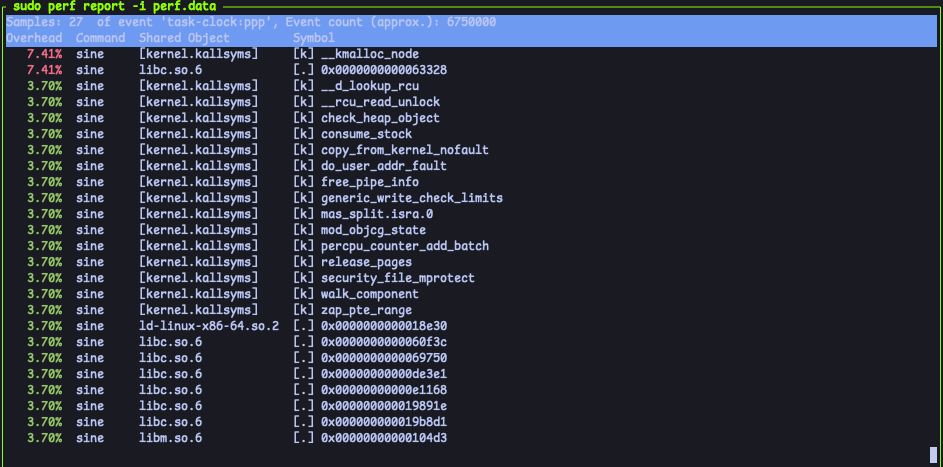
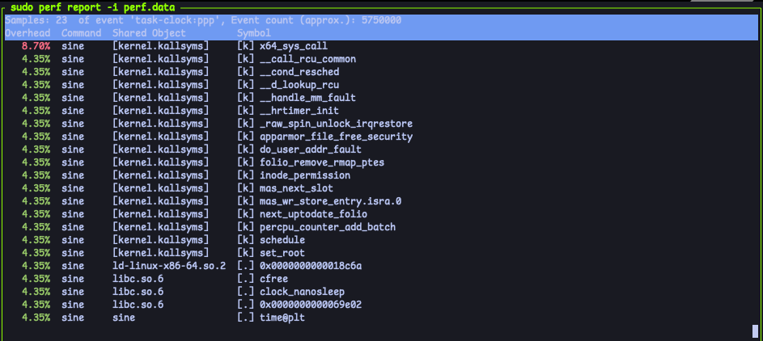

通过perf进行程序性能分析
1. 引言
perf是2009年Linux内核中引入的一个性能分析工具，最初用于Linux的性能计数器子模块。现代的perf可以用来跟踪和分析CPU使用率、内存访问、缓存命中率、I/O操作、上下文切换、函数调用频率、硬件事件、软件事件和内核事件等多种性能指标。
2. perf 的技术原理
- 介绍性能监测的基本概念
一般来说，性能监测包含以下内容：性能指标：用于衡量系统或应用程序性能的具体数据，如CPU使用率、内存使用率、磁盘I/O、网络流量等。硬件性能计数器：嵌入在处理器中的计数器，用于记录特定硬件事件（如指令执行次数、缓存命中率、分支预测失败等）。软件性能计数器：由操作系统或应用程序定义的计数器，用于记录软件事件（如系统调用次数、上下文切换次数等）。采样：定期收集性能数据，以便分析系统或应用程序在不同时间点的性能表现。事件：特定的操作或状态变化，如函数调用、异常处理、硬件中断等。瓶颈：限制系统或应用程序性能的关键因素，通常需要通过优化来解决。基准测试：通过运行标准化的测试程序，评估系统或应用程序的性能。 perf的工作原理 从下面这张图可以看出，perf在内核中的核心组件是perf_events，而在用户空间中，。
- 如何使用硬件计数器
- 性能数据的获取方式（如采样和跟踪）

- 常用功能模块
perf record，perf report，perf stat等
- 数据的分析和可视化技术
3. 通过测试示例说明 perf 的基本用法
- 示例程序的概述
- 如何安装和配置
perf - 使用
perf进行性能测量的具体步骤  - 记录性能数据
- 输出和分析结果
- 示例的结果解读
- 问题分析及性能优化建议
4. 总结
- 总结
perf的应用价值